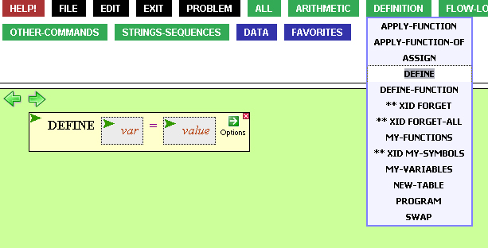
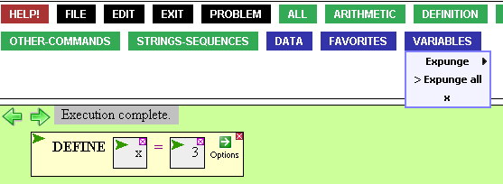
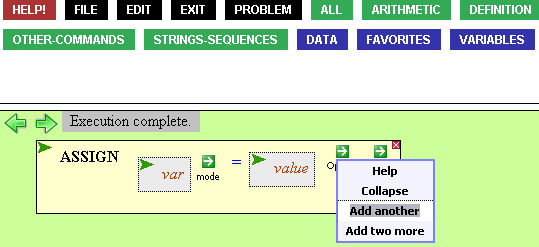

Assign and Define
Just like all computing languages, the VPL allows you to define variables.
To do this, bring down Define from the Definition palette menu.

Once you define a variable, it appears in the Variables menu.

To assign values to multiple variables, bring down Assign from the
Variables menu.

You can reassign variables without problem. Or you can simply delete
them by selecting Expunge from the Variables menu. You can expunge all variables,
or just a specific one.